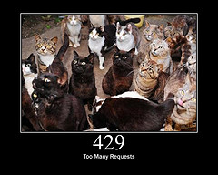

Making Your Services More Reliable
Five Nines = you can fail 0.001% of the time
Chasing Five Nines
- 5.26 min. downtime per year
- 1 request out of 100,000 fails
- You can blow your yearly budget at one time
Microservices:
- Rate Limiting
- Auth
- Fraud/IP address scoring
- Validation
- Database service 1
- Database service 2
- Billing
- Feature flags
Many more opportunities for failure!
When something is taking too long, you abandon it
Your users have a timeout, whether your system does or not
Outside In

Timeouts - 2 Questions
- What's the maximum acceptable response time?
- How long can my service afford to spend processing requests?
Hard Math Stuff
- Thread pool with 100 workers
- Each request takes 1 second. 20 requests come in per second.
- Downstream server is slow, requests take 6 seconds each
- Set timeout to prevent this
Same Timeout set on Connect/Read
Remote Server Unreachable
Connect Timeout
Not available in the standard library!
Slow Read
Not available in the standard library!
Retries
- Work around temporal failures
- Work around failures isolated to a single component
- Downside - can cause more pressure on overloaded server
DNS Failures...
- Mobile apps that use DNS to connect to an API
- Client libraries that use DNS to connect to an API
- Your service uses DNS to connect to third party API's (Stripe, Mailchimp...)
DNS Server is Down/Unreachable
DNS Server is Down - Workarounds
- Connect directly to IP addresses instead of DNS
- Connect to HAProxy locally, use HAProxy round robin
DNS Server is Down - Workarounds
- Resolve DNS in a separate thread
- Use a backup nameserver (eg Google Public DNS)
- Set shorter timeout in /etc/resolv.conf
Connection Errors
- Socket errors - ECONNREFUSED, ECONNRESET
man connect- SSL/TLS failure - invalid certificate, handshake timeout
- Unreachable server - EHOSTUNREACH
Server Unreachable - Workarounds
- Data never made it, so retry!
- Set shorter, separate, connect timeout
- Next connection to a different host
- Same request to several machines - return the fastest, cancel others.
Stage 3: Bargaining
(Socket Write)
Socket Write Failure
- Socket errors - EAGAIN, ECONNRESET
man send
Stage 4: Depression
(Socket Read)
Socket Read Failure
- More (different) socket errors
- Read timeouts - slow servers will crush you
man 2 read
Socket Read Failure - Workarounds
- Retry idempotent requests (GET, PUT, DELETE)
- Timeout can mean a slow server - use backoff
Stage 5: Acceptance
(Response Parsing)
Server Didn't Process Request

- 429 Too Many Requests
- 503 Service Unavailable
Server Didn't Process Request - Workarounds
- Retry it! Usually can retry everything - even POST.
- Be careful about backoff.
Server Errors
- 500 Server Error
- 502 Bad Gateway
- 504 Gateway Timeout
Junk Data
- BadStatusLine/EOFError: Server closed connection (proxy with HTTPS)
- Content-type mismatch
- Error reading a chunk
Server/Junk Errors - Workarounds
- Retry only idempotent requests
- Be careful about backoff.
Response Parsing - Summary
- Retry behavior depends on the status code & the HTTP method used!
- Be careful about backoff.
Idempotent (retryable) request
Requires sid collision handling!
Retry everything with backoff
Retry idempotent requests only
Thanks!
Kevin Burke
These slides are available at:
←
→
/
#